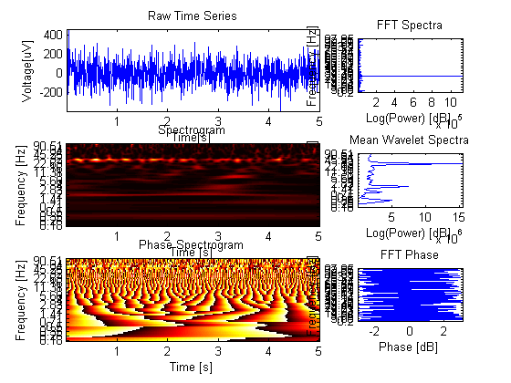

Contents
clear all close all %random normal data noise_level = 100; data = randn(1,1000)*noise_level; t = 0:1:length(data)-1;% Time Samples fs = 200;% Sampling Frequency
Create sine wave
f1 = 30;% Input Signal Frequency d1 = sin(2*pi*(f1/fs)*t)*(randi(100));% Generate Sine Wave f2 = 2; d2 = sin(2*pi*(f2/fs)*t)*(randi(100)); %Modulators f3 = 2; f4 = 1; d3 = sin(2*pi*(f3/fs)*t)*(randi(10));% Generate Sine Wave d4 = sin(2*pi*(f4/fs)*t)*(randi(10));% Generate Sine Wave % data = data+(d1); data = data+(d1+d2); % data = data+(d1.*d3); % data = data+(d1.*d3)+(d2.*d4);
Assign Frequencies of interest
F = 1:.5:100; %linear
F = (2^(1/4)).^(-10:.5:27); %Log
width of the wavelet
width = 10;
Compute Wavelet Analsis
tic; [B,T,P] = BOSC_tf(data,F,fs,width); toc;
Elapsed time is 0.032677 seconds.
Compute FFT Analysis
[pow, phs, freq] = kyle_fft(data,fs,fs/2);
Plot Data
figure; %Plot Original Time Series subplot(3,3,1:2); plot(T,data); axis tight; title('Raw Time Series'); xlabel('Time[s]'); ylabel('Voltage[uV]'); %plot the FFT spectra subplot(3,3,3); plot(1:length(freq),pow); title('FFT Spectra'); xf=1:25:length(freq); % to get log-sampled frequency tick marks set(gca,'XTick',xf,'XTickLabel',round(freq(xf)*100)/100); ylabel('Log(Power) [dB]'); xlabel('Frequency [Hz]'); view(90,90) set(gca,'XDir','reverse'); axis tight; %Plot The mean Spectra subplot(3,3,6); xf=1:4:length(F); % to get log-sampled frequency tick marks plot(1:length(F),mean(B,2)); title('Mean Wavelet Spectra'); set(gca,'XTick',xf,'XTickLabel',round(F(xf)*100)/100); ylabel('Log(Power) [dB]'); xlabel('Frequency [Hz]'); view(90,90) set(gca,'XDir','reverse'); axis tight %Plot the time-frequency transform subplot(3,3,4:5); imagesc(T,1:size(B,1),B); title('Spectrogram'); colormap(hot); set(gca,'YTick',xf,'YTickLabel',round(F(xf)*100)/100); ylabel('Frequency [Hz]') xlabel ('Time [s]') axis xy %plot the phase for each frequency over time subplot(3,3,7:8); imagesc(T,1:size(P,1),P); title('Phase Spectrogram'); colormap(hot); set(gca,'YTick',xf,'YTickLabel',round(F(xf)*100)/100); ylabel('Frequency [Hz]') xlabel ('Time [s]') axis xy subplot(3,3,9); plot(1:length(freq),phs); title('FFT Phase'); xf=1:25:length(freq); % to get log-sampled frequency tick marks set(gca,'XTick',xf,'XTickLabel',round(freq(xf)*100)/100); ylabel('Phase [dB]'); xlabel('Frequency [Hz]'); view(90,90) set(gca,'XDir','reverse'); axis tight;